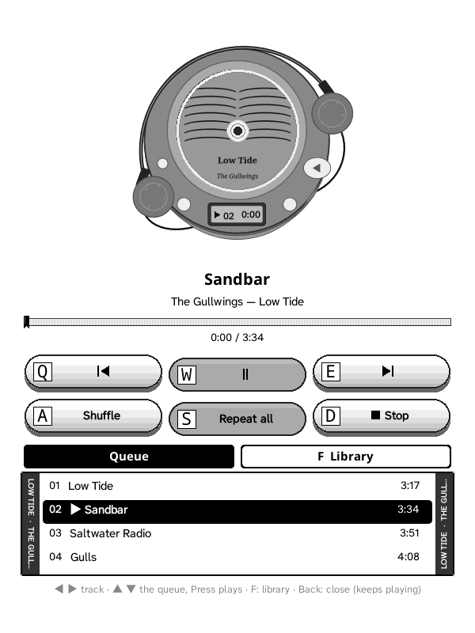
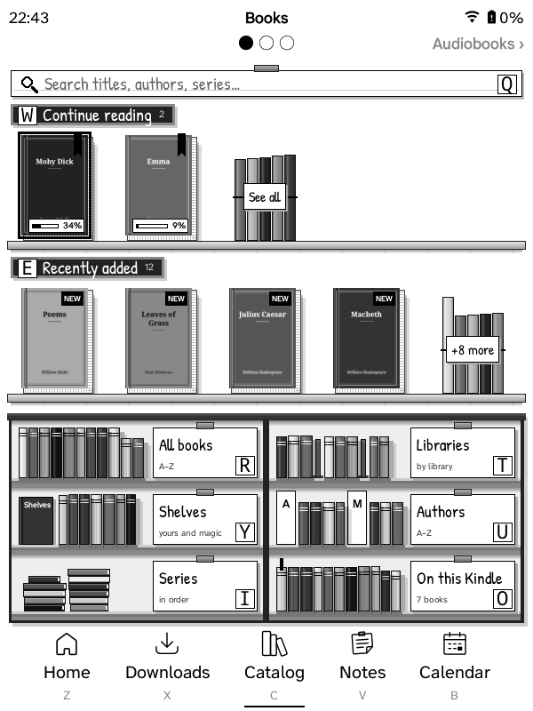
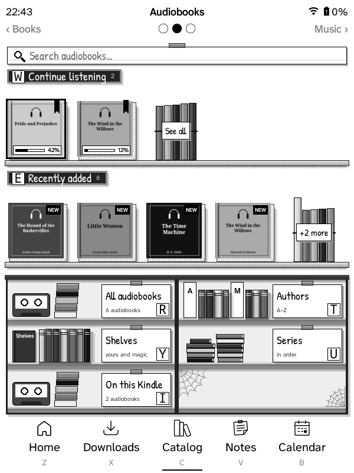
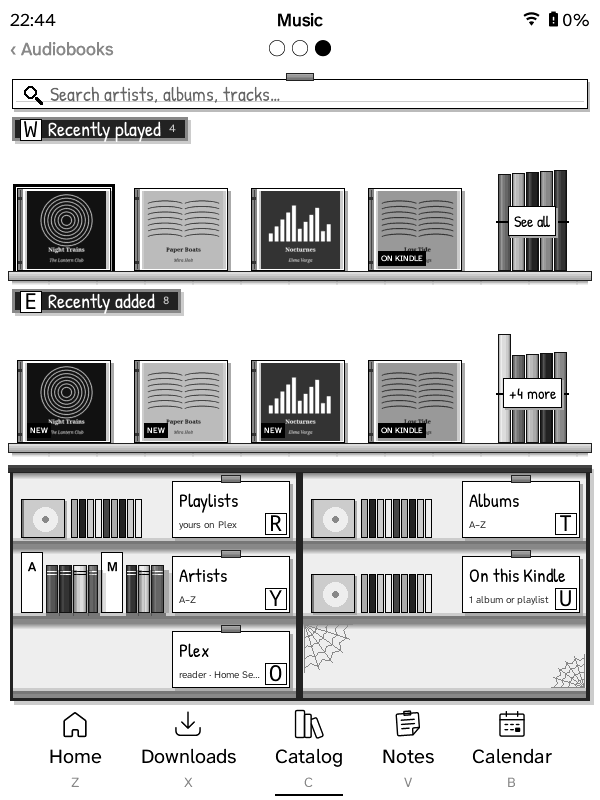

GZreader
Your Grimmory library on a Kindle. Download books, audiobooks and Plex music from one Catalog, read or listen, and keep your place, bookmarks and highlights in sync.
New: no Wi‑Fi? The Kindle 2 and DX sync through your computer →



What it is
GZreader is KOReader trimmed down to reading, with the ZenOS interface and a built-in connection to your self-hosted Grimmory (formerly BookLore) book server. It runs on jailbroken Kindles, from the Kindle 2 and Kindle Keyboard to the Paperwhite and newer, and, as test builds, on rooted Nooks: the Nook 1st Edition and the Nook Simple Touch.
One Catalog: books, audiobooks and music
The Catalog tab has three pages: swipe between them, or use the page-turn keys. Each is laid out like a shop, and anything you pick downloads in the background while you keep browsing or reading.

Books
Your Grimmory library: Continue reading, Recently added, All books, libraries, shelves, authors, series and search.
Download or Download & open. Your place, bookmarks, highlights and ratings stay in sync.

Audiobooks
Grimmory's audiobooks (or a Plex audiobook library): Continue listening, Recently added, authors, shelves and series.
Download & listen opens a cassette walkman. Your place is kept, and synced with Grimmory.

Music
Your Plex music: Recently played, Recently added, playlists, albums and artists, as CD cases.
Download for offline, or Play and it starts as soon as the first track is in, in a portable CD player.
Audiobooks and Music are on Kindles with a speaker or headphone jack (Kindle 2, 3, DX, Touch); the others have the Books page.
Grimmory sync
Reading position, bookmarks, highlights, notes and ratings go both ways with Grimmory, and your books stand on shelves on the Kindle.
Set up from your browser
Scan a QR code or type the Kindle's address and a PIN. One page connects everything, single sign-on included, and sends books to the Kindle.
Notes and calendars
Your Memos notes as sticky notes, and CalDAV calendars or calendar links (Proton, Google…) as an agenda, week or month.
Audiobooks and music
A cassette walkman for audiobooks, with chapters and a sleep timer, and a CD player for Plex albums and playlists, played while you read. On Kindles with a speaker or headphone jack.
Read aloud
On the Kindle 2, 3, DX and Touch: books read in the Kindle's own voice, the sentence highlighted and pages turning by themselves.
Made for e-ink
Wi‑Fi only when needed, few screen flashes on older Kindles, a built-in English dictionary and updates from GitHub.
Kindle 2 · Kindle DX · no Wi‑Fi needed
Make your Wi‑Fi‑less Kindle feel connected
The Kindle 2 and DX never had Wi‑Fi. GZreader keeps them in step anyway: plug the Kindle into your computer, open the sync page in Chrome or Edge and press Sync. Everything travels both ways.
Kindle → your servers
- Where you are in every book
- Bookmarks, highlights and notes
- Reading time and ratings, for Grimmory's stats
- Notes you wrote or ticked, to Memos
Your servers → Kindle
- Books and audiobooks you chose, on the Kindle or on the page
- Albums and playlists from Plex
- Your Memos notes and calendars
- A copy of your library, with covers, to browse offline
- GZreader updates
- Exit GZreader and plug the Kindle in.
- Open the sync page, choose the Kindle's drive, enter its PIN.
- Press Sync, eject, start GZreader.
Runs in your browser: it talks only to your own servers and writes to the Kindle. Sign-ins are kept on the Kindle, encrypted with its PIN, so any computer can sync it. Any Kindle can sync this way too. Try it with a pretend Kindle.
Which package
| Device | Package |
|---|---|
| Kindle 2, Kindle Keyboard (3), DX | gzreader-kindle-legacy |
| Kindle 4, Kindle Touch | gzreader-kindle |
| Firmware 5.16.3 or newer: Paperwhite 3 and later, Kindle 2019–2024, Oasis, Scribe, Colorsoft | gzreader-kindlehf |
| Paperwhite 2 and newer on firmware 5.16.2 or older | gzreader-kindlepw2 |
| Nook 1st Edition (2009, with the colour touchscreen) — test build | gzreader-nook-1st-edition |
| Nook Simple Touch, with or without GlowLight — test build | gzreader-nook |
Each package is for those devices only; the name links to its install steps. Which have been tested: device compatibility.
Install
- Jailbreak the Kindle (and install KUAL on the Kindle 2, 3, DX, 4 and Touch), or root the Nook: jailbreaking and rooting.
- Download your package from the latest release.
- Kindles: unzip it and copy its folders to the top of the Kindle's USB drive, then eject. Nooks: unzip it and copy it to the Nook with adb (1st Edition, Simple Touch).
- Start GZreader from KUAL, from the GZreader item on a touch Kindle's home screen, or from its icon on the Nook 1st Edition. The setup guide shows a QR code (on a Kindle 2 or DX, how to sync with your computer instead).